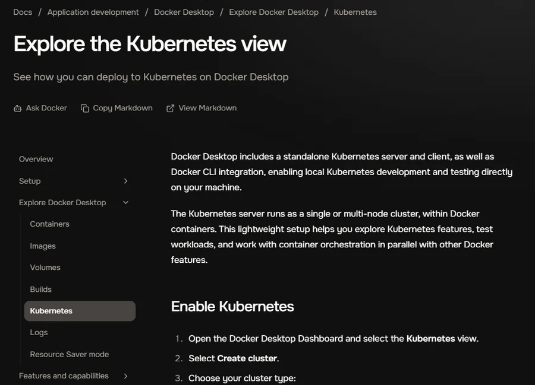

1
La vue Kubernetes
Docker Desktop › Kubernetes
Ouvre le tableau de bord de Docker Desktop : dans le menu de gauche, Kubernetes est juste sous Containers, Images, Volumes et Builds.

Ce ne sont pas des rivaux : Docker range et lance tes applis dans des conteneurs, Kubernetes pilote des centaines de conteneurs sur plein de serveurs. Lequel il te faut, en clair.

Docker et Kubernetes ne font pas la même chose, et ils travaillent ensemble. Docker met une appli et tout ce qu'il lui faut dans un conteneur, puis le lance sur une machine. Kubernetes est un orchestrateur : il décide sur quels serveurs tournent des centaines de conteneurs, en lance plus quand il y a du monde et relance ceux qui plantent.
Il fabrique l'image de ton appli et lance le conteneur, sur ton PC, ton NAS ou un serveur. Avec Docker Compose, un seul fichier décrit plusieurs conteneurs qui vont ensemble.
Une machineTu lui dis ce que tu veux (« 3 copies de mon site ») et il s'en charge en continu sur un groupe de serveurs (un cluster) : il répartit, relance et ajoute des copies.
Plein de serveursUne image fabriquée avec Docker tourne telle quelle dans Kubernetes : c'est le même format standard (OCI). Les développeurs testent avec Docker, la production tourne sur Kubernetes.
CompatiblesPour Jellyfin, Immich ou Home Assistant sur un NAS ou un mini-PC, Docker et Compose suffisent. Kubernetes ajoute beaucoup de complexité, utile seulement avec plusieurs serveurs ou pour apprendre.
Kubernetes : pour apprendreKubernetes est livré dans Docker Desktop (Windows et Mac), juste sous les conteneurs. Exemple tiré de la documentation officielle de Docker (en anglais).
Ouvre le tableau de bord de Docker Desktop : dans le menu de gauche, Kubernetes est juste sous Containers, Images, Volumes et Builds.

Clique sur Create cluster et choisis le type : Kubeadm (un seul nœud, le plus simple) ou kind (plusieurs nœuds). Docker Desktop télécharge ce qu'il faut et lance le cluster (depuis la version 4.51).
Jellyfin, Immich, Home Assistant sur un NAS ou un mini-PC : un fichier Docker Compose, une commande, c'est en route.
Le développeur fabrique l'image de son appli avec Docker et la teste en local, à l'identique de la production.
Kubernetes répartit les copies de l'appli sur plusieurs serveurs et en ajoute quand les visiteurs affluent.
Un conteneur tombe à 3 h du matin ? Kubernetes le remplace tout seul pour garder le nombre de copies demandé.
Un cluster local dans Docker Desktop, ou k3s sur un Raspberry Pi, pour s'entraîner sans louer de serveurs.
Les outils de la même famille, du plus simple au plus costaud (vérifié le 24/11/2026).
Bon pour : ton homelab et le développement : une machine, un fichier, une commande.
Bon pour : quelques serveurs, sans la complexité de Kubernetes.
Bon pour : un petit cluster maison ou pour apprendre.
Bon pour : beaucoup de serveurs et de conteneurs, en production.
Bon pour : les entreprises qui ne veulent pas gérer le cluster elles-mêmes.

Chaque vidéo RepoPop Décode t'explique un sujet IA ou tech en moins d'une minute, avec sa fiche complète comme celle-ci.